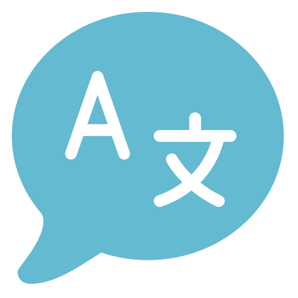
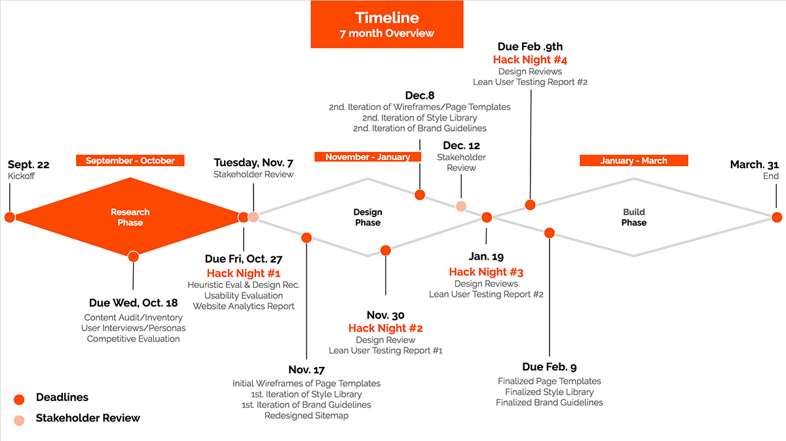
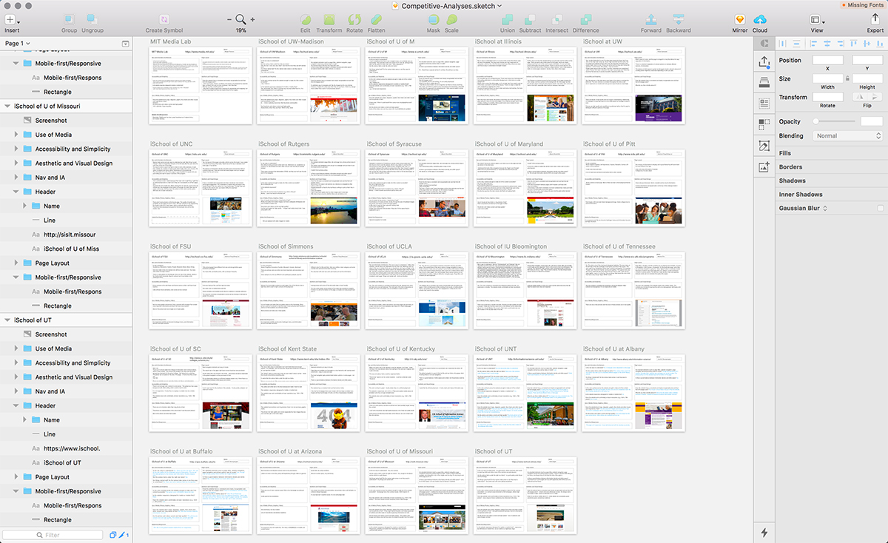
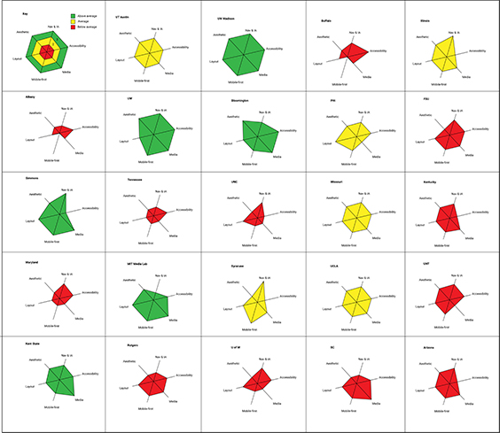
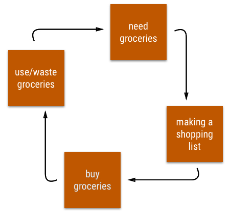
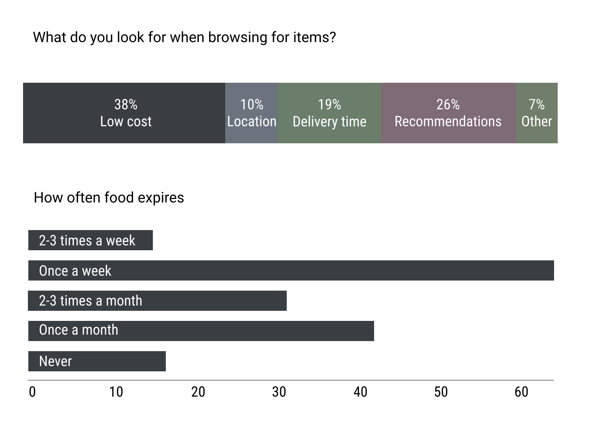
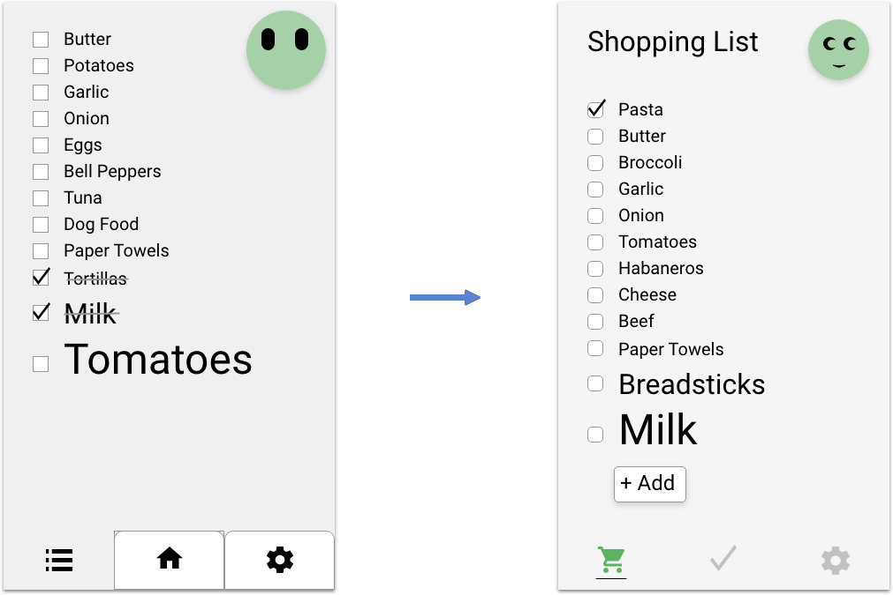
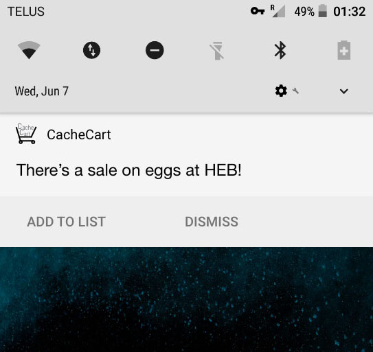
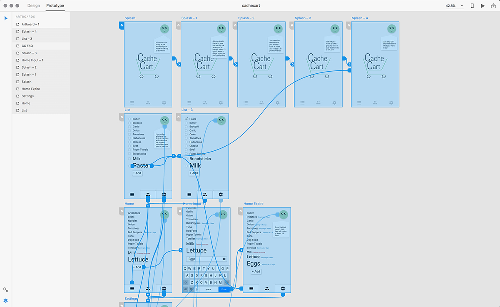

UX Research & Strategy, Conversation & Interaction Design
I'm currently a UX Researcher for the Web Initiatives team at UT Health San Antonio. I have a strong instinct for when to apply time-tested and reliable techniques, and when to challenge the status quo.
To see what I mean, take a look at my Portfolio and Resume .
Skills
Affinity Diagramming
Card Sorting
Competitive Evaluation
Content Strategy
Contextual Inquiry
Conversational Design
Diary Studies
Focus Groups
Usability Testing
User Interviews
Web Optimization
W3C Compliance
Design Tools
Sketch 3
InVision
Adobe XD
Figma
Icons8
Google Dialogflow
HTML5
CSS3
Research Tools
UserTesting
Qualtrics
Camtasia Studio
Google Analytics
Crazy Egg
Microsoft Office
Arabic
Spanish
“ I have directly observed Brent’s skill-set in regard to user research, both generative and formative, and usability testing including developing a detailed test plan, recruiting participants, setting up tasks and scenarios to ensure he’s measuring the desired aspects of the design, execution of the usability test, and presentation of both preliminary and final results.
Brent is more than fluent in all aspects and has an ample
"skills toolbox." He is unique in that he has pursued, in parallel, knowledge in front-end development with the intention of being a better team mate when working with development teams. He has many years of industry experience which has helped him excel as a graduate student since he immediately finds ways to apply his academic learnings in an applied sense.”
Eric Nordquist Partner, Sentier Strategic Solutions, LLC Clinical Associate Professor, UT Austin
As a contractor at a multinational computer technology company, I created a Conversational Design Guidelines document, the purpose of which is to be a resource for current and future design and development of conversational interfaces. Then I designed and created a conversational interface prototype, a virtual assistant, in order to validate and clarify those design guidelines through usability testing.
The design language for this type of interface is human language

Voice and conversational interfaces are increasingly becoming a significant part of our everyday interactions with technology. It is important for designers to follow brand guidelines and design principles that are informed by a number of disciplines, including but not limited to interaction design, content strategy, visual design, and linguistics. Rather than trying to teach the user the right way to speak or write, a conversational interface accommodates users and allows them to express their commands and queries in the way that is most natural to them.
I gave participants a series of tasks to complete with the prototype, changing the interface’s responses and actions to empirically measure how participants perceived it. With this data, I was able to prioritize and highlight particular guidelines based on their efficacy to provide a model for future designers and developers at the organization.
iSchool Website Redesign
As a UX Researcher and Designer for the School of Information at UT Austin, I recruited, managed, and mentored current UX students in redesigning the current website.

Our Research Phase consisted of five teams:
Competitive Evaluation
Content Audit and Inventory
Heuristic Evaluation
User Interviews
Google Analytics
Interviews gave us insights into our users' pain points and the most common tasks they seek to complete on the site. These tasks will be used during tree testing to assess our information architecture.
We interviewed students, faculty, staff, and industry professionals
In addition, the students conducted competitive analyses of 25 schools of information under my direction. I created an artboard for each school with the evaluative criteria pre-filled with questions so that new UX students could learn and contribute at the same time.
"Is the website responsive or mobile-first?"
"Are standard elements (such as page titles, website navigation, page navigation and privacy policy) easy to locate?"
The students filled in their respective artboards, which also provided them an opportunity to use and practice Sketch.

Each artboard evaluated a particular school's website and was divided into the following categories:
Navigation and Information Architecture
Accessibility and Simplicity
Use of Media
Being Mobile-First and Responsive
Page Layout
Aesthetic and Visual Design
Students looked for specific standards like a 4.5:1 color contrast and alt-text accompanying images, according to Web Content Accessibility Guidelines 2.0. Other evaluations were more heuristic in nature, so I individually audited the students' evaluations for consistency and accuracy. After the redesign is complete, students will judge our work by the same metrics in order to demonstrate a measurable improvement in the site's user experience.

UXPA 2017 Student Design Contest
At the UXPA 2017 Conference in Toronto, two classmates and I researched, designed, and prototyped a smart household assistant application called CacheCart in two and a half days.
We first explored the problem space of grocery shopping to find a pain point that we could improve: the waste of groceries.

We distributed an online survey that received 174 responses within a matter of hours and several qualitative in-person interviews with conference attendees. The data showed that shoppers are very concerned with saving money and reducing waste.

Therefore, we focused on expiration date notification in an intelligent and user-centered checklist. The application is accessible in that any action could be taken either by touching and typing or by voice. Based on user and stakeholder feedback, I iterated upon the design.

Optional push notifications help users save money and provide monetization through promotions with grocery stores.

I created a prototype with Adobe XD, allowing us to conduct usability tests before our final presentation.

The final presentation of our research, design, and prototype process earned us second place at the Student Design Competition. Presented here is the interactive prototype.